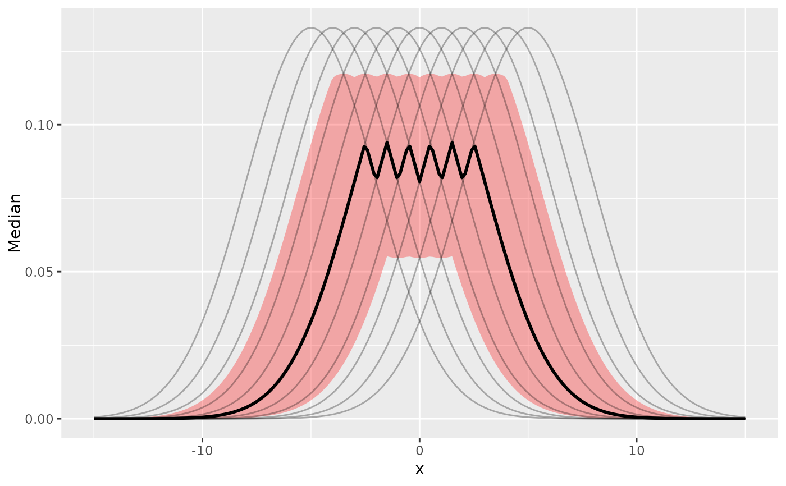

Compute the Curve-Wise Interval (CWI) of posterior distributions using ggdist::curve_interval(). These are particularly useful for visualisation of model's predictions.
cwi(x, ...) # S3 method for data.frame cwi(x, ci = 0.95, ...)
| x | Vector representing a posterior distribution, or a data frame of such
vectors. Can also be a Bayesian model ( |
|---|---|
| ... | Currently not used. |
| ci | Value or vector of probability of the (credible) interval - CI
(between 0 and 1) to be estimated. Default to |
A data frame with following columns:
Parameter The model parameter(s), if x is a model-object. If x is a vector, this column is missing.
CI The probability of the credible interval.
CI_low, CI_high The lower and upper credible interval limits for the parameters.
Unlike equal-tailed intervals (see eti()) that typically exclude 2.5%
from each tail of the distribution and always include the median, the HDI is
not equal-tailed and therefore always includes the mode(s) of posterior
distributions.
The 95% or 89% Credible Intervals (CI)
are two reasonable ranges to characterize the uncertainty related to the estimation (see here for a discussion about the differences between these two values).
The 89% intervals (ci = 0.89) are deemed to be more stable than, for
instance, 95% intervals (Kruschke, 2014). An effective sample size
of at least 10.000 is recommended if one wants to estimate 95% intervals
with high precision (Kruschke, 2014, p. 183ff). Unfortunately, the
default number of posterior samples for most Bayes packages (e.g., rstanarm
or brms) is only 4.000 (thus, you might want to increase it when fitting
your model). Moreover, 89 indicates the arbitrariness of interval limits -
its only remarkable property is being the highest prime number that does not
exceed the already unstable 95% threshold (McElreath, 2015).
However, 95% has some advantages too. For instance, it
shares (in the case of a normal posterior distribution) an intuitive
relationship with the standard deviation and it conveys a more accurate image
of the (artificial) bounds of the distribution. Also, because it is wider, it
makes analyses more conservative (i.e., the probability of covering 0 is
larger for the 95% CI than for lower ranges such as 89%), which is a good
thing in the context of the reproducibility crisis.
A 95% equal-tailed interval (ETI) has 2.5% of the distribution on either
side of its limits. It indicates the 2.5th percentile and the 97.5h
percentile. In symmetric distributions, the two methods of computing credible
intervals, the ETI and the HDI, return similar results.
This is not the case for skewed distributions. Indeed, it is possible that
parameter values in the ETI have lower credibility (are less probable) than
parameter values outside the ETI. This property seems undesirable as a summary
of the credible values in a distribution.
On the other hand, the ETI range does change when transformations are applied
to the distribution (for instance, for a log odds scale to probabilities):
the lower and higher bounds of the transformed distribution will correspond
to the transformed lower and higher bounds of the original distribution.
On the contrary, applying transformations to the distribution will change
the resulting HDI.
library(bayestestR) if (require("ggplot2") && require("rstanarm") && require("ggdist")) { # Generate data ============================================= k = 11 # number of curves (iterations) n = 201 # number of rows data <- data.frame(x = seq(-15,15,length.out = n)) # Simulate iterations as new columns for(i in 1:k) { data[paste0("iter_", i)] <- dnorm(data$x, seq(-5,5, length.out = k)[i], 3) } # Note: first, we need to transpose the data to have iters as rows iters <- datawizard::data_transpose(data[paste0("iter_", 1:k)]) # Compute Median data$Median <- point_estimate(iters)[["Median"]] # Compute Credible Intervals ================================ # Compute ETI (default type of CI) data[c("ETI_low", "ETI_high")] <- eti(iters, ci = 0.5)[c("CI_low", "CI_high")] # Compute CWI # ggdist::curve_interval(reshape_iterations(data), iter_value .width = c(.5)) # Visualization ============================================= ggplot(data, aes(x = x, y = Median)) + geom_ribbon(aes(ymin = ETI_low, ymax = ETI_high), fill = "red", alpha = 0.3) + geom_line(size = 1) + geom_line(data = reshape_iterations(data), aes(y = iter_value, group = iter_group), alpha = 0.3) }#>#>#> #>#> #> #>